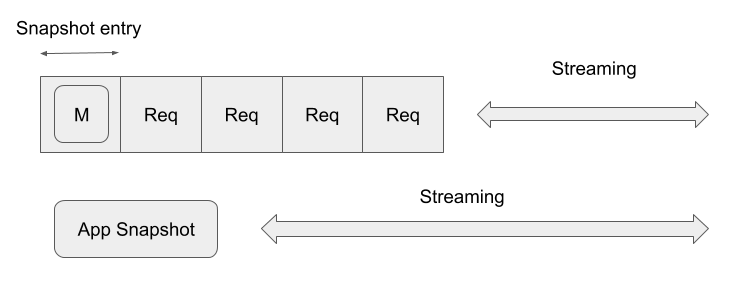

Overview of the architecture
This chapter describes the overview of the architecture.

RaftCore is the heart of the Raft system. It includes internal states and functions that typically produces side effects.
Around the RaftCore, there are many companion threads that indefinitely loops and sends messages to RaftCore.
How much threads are there? As of 0.7, there are 7 threads around the core. This architecure is much like typical operating system that daemon threads are orbiting around the kernel.
The last element of the system is RaftApp.
As its name suggests, it is a user application which runs on the RaftCore. The responsibility of the RaftApp is said to be only two things:
- Apply the messages to the state machine.
- Make a new snapshot.
By connecting your RaftApp with RaftCore, you can build your own Raft process that interacts with other Raft processes to form a Raft cluster of your own.
If you are ready to implement your own RaftApp, API doc and the KVS implementation under example/kvs/ would help.
Log and Snapshot
To explain how I've designed the log and the snapshot in this library, tracking the evolution of the design would be the quickest.
v1: Snapshot as a log entry
lol has started as a company project and it's aim is to replicate data in the same order in the cluster then we considered Raft would fit. That was when my journey began. The name "lol" comes from our project. (one of the two l means log but the another is secret) Hornestly, it is not a joke.
Since our aim is to replicate the log, the log centric design is natural for me to start with. Also, I don't like to implement InstallSnapshot RPC as described in Raft dissertation because it would certainly introduce extra complexity to the software.
This way, the design v1 is drawn.

In this design, everything is a log entry. Everything includes not only the user command but snapshot and special entries to change the membership. Log entry has a pair of term and index to the previous entry so to ensure the log consistency, and the command payload in bytes for versatility. Since everything is a log entry, everything in done under Raft's log replication mechanism. This is so simple and easy to implement. But in terms of versatility, this design choice is not the optimimal.
Why is it not optimal? The main reason is the snapshot's size is limited by the system memory since in replication we must put in buffer to read or write the data (Consider Put method in RocksDB). We could avoid this by some implementation hacks like cutting snapshot payload into streaming chunks but this would destroy the interfaces and not beatiful. Then we have to find a new design.
v2: Snapshot Inventory
The problem must root in the fact that we try to deal with completely different things, snapshot and normal entries, in the same way. That made me come up with the idea of snapshot inventory.
In Raft dissertation, InstallSnapshot RPC is PUSH operation because it is initiated in leader node and the snapshot chunks are sent in streaming to followers.
My idea is completely the opposite: GetSnapshot RPC is initiated by follower and leader sends back the snapshot in streaming after finding it in the snapshot inventory. This is a PULL operation.

In design v2, application snapshot is moved out of the snapshot entry and then put in snapshot inventory. The snapshot entry still exists and replicated to slow followers in the same way as in v1. The difference is: when follower received snapshot entry, it calls GetSnapshot RPC to the sender (in this case it must be a leader) to request the application snapshot in stream. When the GetSnapshot RPC is completed and the snapshot is stored in the snapshot inventory of its own, the follower node commits the snapshot entry just like the way filesystem firstly stores the file data and then metadata to complete the operation.
The greatest point of this algorithm is that leader node doesn't have to find slow nodes but slow node is noticed in the way of log replication. This makes the implemetation pretty simple and thus bug-free.
Snapshot Repository
In the previous section, we have learned that the snapshot is placed in somewhere outside the log entry and copied to other nodes in streaming.
The snapshot entity that is made from the stream and sent in stream is called snapshot resource.
The library does't care what it actually is and where it is actually placed but let's call it snapshot repository.

In RaftApp's process_write, you can create a new snapshot resource and save it in the snapshot repository.
The function then return MakeSnapshot::CopySnapshot to tell the RaftCore that a new snapshot is made.
If RaftCore is told that a new snapshot is made it tries to commit a snapshot entry corresponding to it.
Again, the library doesn't care what the snapshot resource actually is. It can be a file in an object storage or a snapshot of some storage backend like RocksDB. It is fully up to the implementor.
Snapshot Types (Copy and Fold)
The most difficult part of Raft implementation is how to deal with the snapshot. If you are a Raft library implementator like me, you will agree with this.
From the word "snapshot" you may imagine it is a copy (or light-weight snapshot) of the state machine which is provided by RaftApp. Yes, lol calls this type of snapshotting Copy snapshot. When RaftApp returns a Copy snapshot from process_write this snapshot is granted as a snapshot up to the current apply index.
From a different point of view, snapshot can be seen as recomputing the log entries up to some point in time. lol call this type of snapshot Fold snapshot.
lol supports both types of snapshot: Copy snapshot and Fold snapshot.
The comparison between these two is copy cost + overhead VS recomputation cost: Copy snapshot needs to copy the current snapshot in process_write so copy cost is charged (RocksDB or dm-thin's snapshot is not even zero-cost) and the operation spends extra time. Fold snapshot on the other hands, can be executed in parallel with process_write but costs from recomputation.
Log Abstraction
RaftStorage is the abstraction of the log storage.
Conceptually, it includes the recent vote and the log entries. Every snapshot entry is guaranteed to be have the corresponding snapshot resource because they are always committed after saving the corresponding resource.
By default, lol provides some implementations (memory, file and rocksdb). Normally, you can choose the best implementation from these three.
Some other Raft libraries like async-raft defines one huge abstraction that kind of mixes RaftApp and RaftStorage but I went the different way because these two can be cleanly separated in my architecture and it is more user-friendly because only thing user needs to implement is RaftApp.
Client Interactions
In Raft, any command is sent to the leader and later the command is processed by the state machine. That is a textbook explanation of Raft protocol.
However, this needs to send the request to the leader (lol implements forwarding so user request sent to any of the servers are forwarded to the leader), the command is replicated to the majority of servers, wait for application to state machine and finally acks. This takes much time.
Some command may need all these processings before ack but other may not. For example, some command may be allowed to ack before entry application as it is guaranteed to be applied in some time later.
lol allows clients to interact with the cluster in a variety of ways. Here is the list:
- RequestApply: The command is sent to the leader, appended to log, replicated to majority, applied and then ack.
- RequestCommit: The command is sent to the leader, appended to log, replicated to majority and then ack.
Optimized Query Processing
In normal Raft, any application commands are appended to log and brought to the state machine to be applied. However, if the command is query type which doesn't have any side effects, there is a possible optimization.
In RequestApply, if the request's mutation is false then the request is recognized as query. As described in $6.4 of Raft dissertation, the query waits for the read_index (the commit_index at the moment the query hits the server) to be applied.
In the implementation, queries are firstly put into QueryQueue and processed later.
The processings are done in parallel if there are more than one queries waiting for the same read_index to complete.
Gateway
In Raft, client request is sent to the leader and processed by the leader. So how did the client know who is the leader?
In Raft dissertation, some algorithm are described. One of which is sending back known leader as a hint when client sent the request to some non-leader node. Forwarding the request to the leader is also explained.
But how do you access the follower? More precisely, how do you know some valid node in the current membership?
lol's Gateway tracks the current membership by polling the membership so client is always accessible to at least one node in the cluster. After giving some valid members to the Gateway manually, Gateway automatically tracks the cluster until it is destructed.

Cluster Management
In lol, adding and removing a server to and from the cluster is just an extension of normal log replication. This means the cluster must have a leader to accept spacial requests: AddServer and RemoveServer which leads to append a special command called ClusterConfiguration.
When you start a single Raft server, you may think the node automatically forms a small cluster with one node and becomes a leader but this is a wrong assumption because starting a second server will cause split brain because there are two leaders at the same time. This is what Raft's election algorithm tries to avoid by choosing only one leader in a single term.
You now learned that starting a server does not automatically form a cluster nor give it a leadership. However, this leads to an other problem: How to add servers? Since there is no leader to accept AddServer request.
In lol, When a server received AddServer request and it doesn't belong to any cluster, it forms a cluster with only itself, regardless of the leadership. This is called cluster bootstrapping.

Single-server changes
There are two methods to change the cluster membership in Raft: one is by joint concensus algorithm and the another is single-server changes.
In the initial Raft research paper, joint consensus algorithm was used to change the membership but later the author found a flaw in joint consensus algorithm, and the lastest dissertation uses single-server changes. lol uses this.
So what is single-server changes? This algorithm adds or removes only one server at a time.
These operations are represented as special requests (AddServer and RemoveServer) and it turns into ClusterConfiguration command in the log which is then replicated to the cluster as well as normal commands.
The rational behind this is a single-server change always share the majority nodes between before and after the change. The following figure from Raft dissertation describes a case of adding one node.

So the next leader always know the latest membership and the consensus on membership change will never be lost.
Leader Election
In Raft, leader has a special authority in the cluster.
The algorithm proves only one leader exists in one term and the leader is at least "stronger" (I have no idea about better expression) than the majority of the cluster servers. The principle is very simple however, there are non-trivial corner cases and some useful extensions.
Leader failure detection
Typical Raft implementation uses static election timeout to detect leader failure however, this strongly assumes that latency between nodes is uniform and measurable in prior of deployment. The assumption is broken when you go out to cloud.
To solve this, lol uses adaptive failure detection algorithm called Phi-Accurual detection algorithm. The concept is very simple: the history of heartbeats is given and assume the intervals are distributed normally then we are able to calculate the possiblity of getting another heartbeat in the future.
With this feature, applications based on lol can be deployed in cloud where the latency between nodes may be difference and unstable.
Leadership Transfer Extension
In Raft, leader is chosen by election. Election happens when follower considers leader is dead.
If leader is removed from the cluster, every client requests fails until a new leader is elected.
To avoid this, lol implements TimeoutNow RPC which requests a node to
immediately start election (by becoming candidate in new term) regardless of election timeout.
In lol, when leader is removed from the cluster, this TimeoutNow RPC is sent to
one of the living nodes so a new leader is immediately chosen.
This RPC is also used to pin the leader node. In some senario, some node is more suitable for being a leader than other nodes.
Tools
- lol-admin: Command line tool for admin.
References
- Raft Dissertation: Diego Ongaro's Dissertation in Stanford Univ.